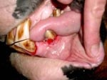

|
|
| Het gebit |


Kaakhelft volgroeid paard • 3 snijtanden • 6 kiezen 3 of 4 premolaren (valse kiezen) 3 molaren • 1 hoektand (ook haaktanden of hengstentanden genoemd) Totaal volgroeid paard • 12 snijtanden (6 in de bovenkaak en 6 in de onderkaak) • 24 kiezen (6 aan iedere kant in de boven- en onderkaak) 12 premolaren (valse kiezen) 12 molaren • 4 hoektanden (ook haaktanden of hengstentanden genoemd) Totaal 36 tot 42 tanden Haaktanden of hengstentanden Komen bij hengsten voor en soms ook bij merries De lagen Een tandloze opening tussen snijtanden en de kiezen. Dit is de plaats waar het bit ligt. |

Snijtanden Zij snijden het gras af en brengen het voedsel in de mond. Wanneer de tand doorkomt is het midden hol en heeft iets weg van een schelp. Deze tand- of kroonholte (infundibulum) is tapvormig en neemt geleidelijk af in grootte, eerst bij de middelste tanden en daarna bij de buitenste. Een sterretje ontstaat v��r de kroonholte wanneer de pulpaholte zichtbaar wordt. Tijdens de slijtage verandert het sterretje van vorm van streepje, tot ovaal tot rond. Op 13-jarige leeftijd is het verdwenen. Op ca, 10-jarige leeftijd ontstaat een sleuf in de buitenbovensnijtand, de groeve van Galvayne. |

Kiezen of molaren De kiezen van een paard blijven doorgroeien. Het paard is een planteneter en het voedsel wordt vermalen tussen de kiezen alvorens het kan worden ingeslikt en een goede vertering kan plaatsvinden. De kiezen bestaan uit 3 of 4 premolaren (valse kiezen) aan elke kant van elke kaak, afhankelijk of er wolfskiezen (1e premolaar) aanwezig zijn. Daarachter liggen 3 molaren. (ware kiezen) |
| Doorbraak en wisselen | ||||||||||||
|
Een veulen heeft bij zijn geboorte geen tanden. De eerste tanden kunnen tussen 0 en 6 dagen verschijnen. Tussen 6 tot 8 maanden heeft het veulen al zijn melk- of veulentanden. Het wisselen begint met 2.5 jaar en is voltooid met 4.5 jaar. Bij de snijtanden wisselt eerst het middelste paar, vervolgens het paar ernaast en tenslotte het buitenste paar. Dit gebeurt met respectievelijk 2,5, 3,5 en 4,5 jaar. De kiezen wisselen om de 6 maanden. Op 5-jarige leeftijd moet het gebit voltooid zijn en begint de slijtage. Doorbraak melktanden
Doorbraak permanente elementen
|
|
Springoefeningen in zakformaat |

Wil je verschillende springoefeningen en enkele parcoursschetsen in een handig boekje? Een leuk geschenk voor jezelf, je vriend(in) of familielid. Lees meer ............ |
| Slijtage en leeftijd | ||
   De slijtage begint ongeveer met 5 jaar. De snijtanden slijten (afhankelijk van de leefomstandigheden) ondeveer 2 mm. per jaar. De kroonholte die van bovenaf in de tand te zien is, is ongeveer 6 mm. diep en verdwijnt geleidelijk. Dit noemt men ook wel "de tand is gevuld". Op 8-jarige leeftijd zijn alle tanden gevuld. Een sterretje ontstaat v��r de kroonholte wanneer de pulpaholte zichtbaar wordt. De sterretjes verschijnen in de onderkaak van binnen naar buiten op 8 - 9 - 10 jaar. De sterretjes verschijnen in de bovenkaak van binnen naar buiten op 11 - 12 - 13 jaar.    |
||
| Veel voorkomende problemen bij het gebit | |
|
Verschijnselen • kantelen van het hoofd • hoofd schudden • sterk in de mond • bit niet willen aannemen • bit vast pakken (paard pakt met zijn kiezen het bit vast en is niet stuurbaar) • op het bit kauwen • tong uit de mond • tong over het bit heen • mond willen openen • niet of heel moeilijk willen nageven • slechte buiging • achter de loodlijn willen lopen • staken • bokken • steigeren • kreupel / onregelmatig Tijdens het eten: • voedselproppen • knoeien • met mond open kauwen • langzaam en/of voorzichtig kauwen • mond niet ver open kunnen doen • altijd aan 1 kant kauwen • niet of slecht willen eten • hoofd scheef houden • water drinken tijdens het eten • eerst hooi eten en dan pas brokken • op en neer kauwende beweging in plaats van een draaiende kauwbeweging Algemeen: • tandsteen • gewichtsverlies • stinkt uit de mond / neus • kaakgewricht (TMJ) gevoeligheid • gevoelig bij aanraking / hoofdschuw • asymmetrisch hoofd • boos bij het aandoen van halster en/of hoofdstel • verdikkingen / bulten op het hoofd • neusuitvloeiing • ooguitvloeiing • pijn door beschadigingen en of wondjes in de mond • zweertjes op lip / tandvlees • overal op willen bijten. • voedsel wordt slecht gekauwd, dus slecht verteerd, wat koliek tot gevolg kan hebben. • slokdarmverstoppingen • diarree • onverteerde voedselresten in de ontlasting • problemen door wolfskiezen (of -tanden) • doorgegroeide, gebroken of ontstoken kiezen |
|
  blinde wolfstand Wolskiezen (of -tanden) Een kleine functieloze kies/tand die hoofdzakelijk voorkomt in de bovenkaak, voor de kiezen in de lagen. Het is een overblijfsel uit de oertijd. Intussen is de kies/tand onderontwikkeld aanwezig bij sommige paarden. Ze ontwikkelen zich tussen de 6de en 18de levensmaand. Ze kunnen problemen opleveren doordat het bit tegen de tand gaat drukken en daarom moeten ze verwijderd worden voordat het bit in de mond gelegd wordt. Wolfskiesjes/tandjes zijn in de meeste gevallen makkelijk te verwijderen omdat ze vaak geen wortel van betekenis meer hebben. Soms is er een wolfskies/tand, die niet is doorgebroken, onder het tandvlees aanwezig en veroorzaakt daar problemen. Dit heet een blinde wolfskies/tand. Dit is een erfelijke afwijking. Gevolg • bit drukt tegen de tand Verschijnselen • het schudden van het hoofd • niet willen buigen naar een kant |
|

Doppen De dop is het restant van een melktand en valt normaalgesproken uit tijdens het wisselen. Wanneer dit niet gebeurt blijft hij als een dop op de kiezen zitten en moet verwijderd, dit is een eenvoudige ingreep. Tussen de nieuwe en oude tand kunnen namelijk voedselresten gaan zitten, dit zorgt voor een vieze lucht uit de mond omdat het voedsel kan gaan rotten en dit kan dan weer lijden tot ontstekingen. De volwassen tand die tegenover deze dop ligt groeit sneller omdat deze sterker is dan de melktand. Oorzaak • een restant van een niet uitgevallen melktand tijdens het wisselen Gevolg • beschadiging slijmvlies en wang • voedselresten gaan tussen de dop en de nieuwe tand zitten • dit kan ontstekingen veroorzaken Verschijnselen • vieze geur uit de mond • ontstekingsverschijnselen (zie verder) • moeilijkheden met eten |
|
 
Haken Zij ontstaan op de voorste bovenkiezen en de achterste kiezen in de onderkaak. Ze veroorzaken irritaties in het kaakgewricht. De rij tanden van de bovenkaak staan ongeveer 30 graden verder van elkaar dan die in de onderkaak. Dit betekent dat de boventanden elkaar aan de buitenkant overlappen. Als een paard kauwt, beweegt hij de onderkaak in een verticaal vlak ten opzichten van de bovenkaak en in een draaiende beweging van voor naar achter. Dit heeft tot gevolg dat de plaatsen die contact maken afslijten, terwijl de andere, die dit niet doen, scherpe randjes krijgen. • door een verkeerde kaakbeweging kan de eindtand niet voldoende afslijten en kan een "haakje" ontstaan aan de eerste kies in de bovenkaak en achterste in de onderkaak of andersom. Oorzaken • de relatieve positie van de tanden en de beweging van de kaken tijdens het malen en kauwen. Verschijnselen • pijnlijke wangen • Als, met het bit in, een wending wordt gereden, tracht het paard zich voorwaarts te bewegen met zijn hoofd afgewend van de aangetaste kant. Gevolgen • beschadiging aan wangen of tandvlees • beperking kauwbeweging • problemen kaakgewricht |
|
|
Verhoogde kies Een verhoogde kies/tand is een kies/tand die hoog boven de andere kiezen/tanden uitsteekt doordat een tegenoverliggende kies/tand ontbreekt. Het verhinderen van de zijwaartse beweging bij het kauwen kan een probleem zijn met als gevolg een ongelijke slijtage van de snijtanden. Oorzaken • het ontbreken of beschadiging van een tegenoverliggende tand of kies Verschijnselen • problemen met kauwen Gevolgen • slechte conditie en vermagering |
|
|

Tandvleesontsteking Tandvleesontsteking ontstaat doordat er in een holte rond de kies, door het terugtrekken van het tandvlees, resten voedsel zitten te rotten. Het paard kauwt verkeerd. Oorzaken • terugtrekken tandvlees • verkeerd kauwen vanwege haken, doppen e.d. Verschijnselen • vieze geur uit de mond • rode, pijnlijke plekken op het tandvlees Gevolgen • slechte conditie |
|

Overbeet (varkensmond) Onderkaak is korter dan de bovenkaak. De snijtanden komen elkaar niet tegen en kunnen dus niets snijden. Een overbeet kan erfelijk zijn. Maar kan ook veroorzaakt worden doordat er haken zitten op de eerste en achterste kies. Dit is een erfelijke afwijking. |
|

Onderbeet (snoeksmond) Bovenkaak is korter dan de onderkaak. De snijtanden komen elkaar niet tegen en kunnen dus niets snijden. De meeste paarden hebben haken op de eerste kies in het onder gebit en haken op de achterste kies in de bovenkaak. Een onderbeet kan erfelijk zijn. Het komt vaker voor bij pony's en Shetlanders. Onderbeet is het tegenovergestelde van de overbeet. Dit is een erfelijke afwijking. |
|
| Bij de tandarts |

Om problemen te voorkomen is het verstandig om minimaal één keer per jaar het gebit te laten controleren door een tandarts. Vaak worden dan eventuele scherpe punten weggevijld. Dit is voor het paard pijnloos.
Er moet voor opgepast worden dat het snijvlak van de kiezen en tanden niet te vlak gemaakt wordt omdat de kiezen als een molensteen het voedsel moeten kunnen malen. Een te glad snijvlak maakt dit kauwen onmogelijk. |
| Advertentie |